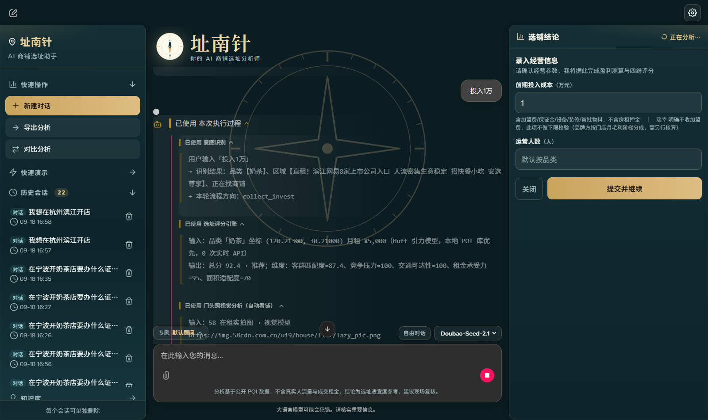

14 个节点全清单（与 agent_graph.py 里
add_node 的调用一一对应，可逐个点名）：
classify ·
collect_info · collect_brand ·
collect_invest · search_rental ·
select_shop · analyze ·
interpret · free_chat ·
compare · shop_first ·
place_first · reverse_match ·
diagnose
—— 其中 shop_first／place_first／
reverse_match 对应三个互斥起点，diagnose 只在
已开店分支可达。
真 function calling：调用由运行时执行
工具词汇表 33 个
既是专家白名单，也是"工具名漂移"的护栏
可执行注册 18 个
评分／反解租金／竞品／品牌／诊断…
越界被 registry 拦下
LLM 只能在这个白名单内调用
金额类事实由工具独占：prompt 严禁编造行情数字，一切金额必须来自工具返回值。
AI 的职责在这一层之外 —— 把一句人话解析成五项参数、判定走哪条分支、拆开一句话里的多个诉求、
驱动九位专家各切视角解读；一句话里含多个诉求时会被拆成子意图分别路由，各自给出明确结论。
数据治理 · 数据先取干净，结论才敢给
一级数据来自本地预抓取库，实时接口只作兜底。兜底路径曾出过一个会陈述错误事实的问题。
失效链路 · 限流被静默吞成了「空结果」
连续调用
第 5 次起
›
接口限流
间隔 2s 重试即恢复
›
status ≠ 1
return []
›
下游收到「空」
当成"本来就没有"
›
报告写
"高德未收录该品牌"
用户读到的结论是 "这个商圈没有蜜雪冰城"，两次评分月流水相差 2.29 倍。
这类缺陷比算错一个数更危险 —— 它陈述了一个错误事实。根子在最后两格之间：
限流 与 本来就没有 塌成了同一个值。
四条修法
① 抓取层带出失败原因
按错误码分"可重试"（QPS 超限→退避重试）与
"配额耗尽"（不重试，明确告知今天取不到）
② 持久化冻结缓存
缓存原始数据快照，同坐标换品牌可复用；
成功 30 天、失败 180 秒
③ 六种状态分流
正常／仅公开数据／取数失败／无同品牌／本店品牌／样本不足；
"取数失败"必须声明不代表附近没有该品牌
④ 限流时本地库交叉验证
本地库能证明该品牌 1km 内有 N 家门店，只是本次没取到价格，
直接反驳"限流＝附近没有这家店"
副产物：同一地址评分从 2 次 API 降为 1 次，重复分析降为 0 次；
端到端两次完整评分的 17 项结果指纹完全相同，已固化为回归断言。
一个单位口径错误，能让结论完全翻转
把月租砍到测试值时结论反而更差 —— 顺着这个反直觉现象追下去，发现引擎把第三方接口返回的
「单杯价」当成了「每单金额」，系统性低估流水约 1.4 ~ 1.7 倍。
| 品牌 | 接口值 | 招股书
单杯价 |
招股书
每单金额 | 每单
杯数 |
|---|
| 蜜雪冰城 | ¥7.0 | ¥6.72 |
¥11.4 | 1.70 |
| 沪上阿姨 | ¥14.0 | 7~22 中位 |
¥25 | 1.79 |
| 霸王茶姬 | ¥20.0 | ¥20.48 |
16~20 | ≈1.0 |
前两列几乎相等、第三列明显更高 ⇒ 接口值落在"单杯价"这一列。三重对照全部取自招股书公开披露。
修正后，同一个铺位的结论翻转了
宁波天一广场 · 30㎡ · 前期投入 20 万 · 蜜雪冰城 · 月租 ¥12,000
| 客单价口径 | 月流水 |
月净利 | 回本 | 结论 |
|---|
| 品类画像（无校正）¥16 | ¥131,626 | +¥31,837 |
5.3 月 | 推荐 |
| 旧：单杯价当每单 ¥7 | ¥57,586 |
−¥4,664 | 回不了本 |
账算不过来（误判） |
| 新：公开每单金额 ¥11.4 | ¥93,783 |
+¥13,181 | 10.7 月 |
推荐 |
品类画像 ¥16（无校正）
+¥31,837
旧：把单杯价当每单 ¥7
−¥4,664
新：公开每单金额 ¥11.4
+¥13,181
中间那条红的是误判：口径错一次，一个能赚钱的铺子被判成"账算不过来"。
一个单位口径，足以把一个能赚钱的铺子劝退。
由此建立的数据纪律：逐字段标注来源（招股书／年报）与披露期间；每个值都能分辨
「披露」还是「推导」，推导值显式标注；查不到就返回空 ——
GMV 是区间字符串就不猜中位数，未收录的品牌不给替代值。这三条"不给"的做法本身也进了回归测试。

实机证据 · 同一件事在两处界面上必须说法一致
加盟费三态（收取／明确不收／查不到）是一条跨界面的不变式：聊天里说「明确不收」，
同一屏右侧的表单也必须写「明确不收」。这条不变式被抓过一次 —— 聊天侧的两态逻辑改了、
构造表单提示文字的那段代码没跟着改，同一屏于是出现两套矛盾说法。
补的断言刻意不用字面查找，改用「顺序」表达，因为新写法里本来就含旧代码的子串。